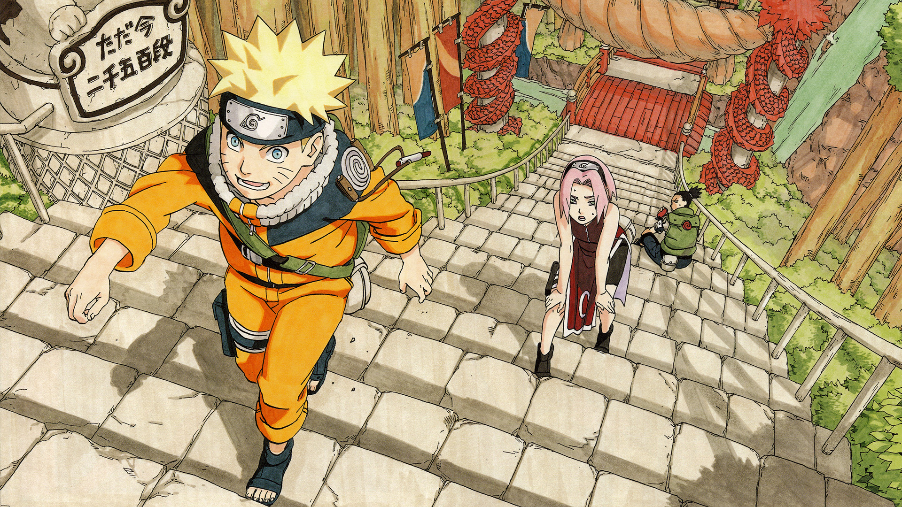

Anime quotes

“People’s lives don’t end when they die, it ends when they lose faith.”
– Itachi Uchiha (Naruto)
“If you don’t take risks, you can’t create a future!”
Monkey D. Luffy (One Piece)
If you don’t like your destiny, don’t accept it.”
– Naruto Uzumaki (Naruto)
“When you give up, that’s when the game ends.”
– Mitsuyoshi Anzai (Slam Dunk)
“All we can do is live until the day we die. Control what we can…and fly free.”– Deneil Young (Uchuu Kyoudai or Space Brothers)
orgetting is like a wound. The wound may heal, but it has already left a scar.”
– Monkey D. Luffy (One Piece)
It’s just pathetic to give up on something before you even give it a shot.”
– Reiko Mikami (Another)
“If you don’t share someone’s pain, you can never understand them.”
– Nagato (Naruto)
“Whatever you lose, you’ll find it again. But what you throw away you’ll never get back.“
– Himura Kenshin (Rurouni Kenshin)
We don’t have to know what tomorrow holds! That’s why we can live for everything we’re worth today!”
– Natsu Dragneel (Fairy Tail)
“Why should I apologize for being a monster? Has anyone ever apologized for turning me into one?”
– Juuzou Suzuya (Tokyo Ghoul)
“People become stronger because they have memories they can’t forget.”
– Tsunade (Naruto)
“I’ll leave tomorrow’s problems to tomorrow’s me.”
– Saitama (One-Punch Man)
If you wanna make people dream, you’ve gotta start by believing in that dream yourself!”
– Seiya Kanie (Amagi Brilliant Park)
Being lonely is more painful then getting hurt.”
– Monkey D. Luffy (One Piece)
“There’s no shame in falling down! True shame is to not stand up again!”
– Shintarō Midorima (Kuroko’s Basketball)
Simplicity is the easiest path to true beauty.”
– Seishuu Handa (Barakamon)
“If you can’t do something, then don’t. Focus on what you can.”
– Shiroe (Log Horizon)
“Giving up kills people. When people reject giving up… they finally win the right to transcend humanity.”
– Alucard (Hellsing)
“You can die anytime, but living takes true courage.”
– Kenshin Himura
“Every journey begins with a single step. We just have to have patience.”
– Milly Thompson
“It doesn’t do any good to pretend you can’t see what’s going on.”
– Yuuya Mochizuki (Another)
“Being weak is nothing to be ashamed of… Staying weak is !!“
– Fuegoleon Vermillion (Black Clover)
“To act is not necessarily compassion. True compassion sometimes comes from inaction.”
– Hinata Miyake (A Place Further than the Universe)
“A dropout will beat a genius through hard work.”
– Rock Lee (Naruto)
“Reject common sense to make the impossible possible.”
– Simon (Tengen Toppa Gurren Lagann)
“Whatever you lose, you’ll find it again. But what you throw away you’ll never get back.”
– Kenshin Himura (Rurouni Kenshin: Meiji Kenkaku Romantan)
“If you really want to be strong… Stop caring about what your surrounding thinks of you!”
– Saitama (One Punch Man)
“Vision is not what your eyes see, but an image that your brain comprehends.”
– Touko Aozaki (The Garden of Sinners / Kara no Kyōkai)
“Sometimes, people are just mean. Don’t fight mean with mean. Hold your head high.”
– Hinata Miyake (A Place Further than the Universe)
“The ticket to the future is always open.”
– Vash The Stampede (Trigun)
“Hard work is worthless for those that don’t believe in themselves.”
– Naruto Uzumaki (Naruto)
“A place where someone still thinks about you is a place you can call home.”
– Jiraiya (Naruto)
“Life comes at a cost. Wouldn’t it be arrogant to die before you’ve repaid that debt?”
– Yuuji Kazami (The Fruit of Grisaia / Gurizaia no Kajitsu)
“You can die anytime, but living takes true courage.”
– Himura Kenshin (Rurouni Kenshin)
“Every journey begins with a single step. We just have to have patience.”
– Milly Thompson (Trigun)
“If you just submit yourself to fate, then that’s the end of it.”
– Keiichi Maebara (Higurashi: When They Cry)
“It is at the moment of death that humanity has value.”
– Archer (Fate Series)
“People, who can’t throw something important away, can never hope to change anything.”
– Armin Arlert (Shingeki no Kyojin / Attack on Titan)
“Whatever you do, enjoy it to the fullest. That is the secret of life.”
– Rider (Fate Zero)
“Power comes in response to a need, not a desire. You have to create that need.”
– Goku (Dragon Ball Z)
“There are no regrets. If one can be proud of one’s life, one should not wish for another chance.”
– Saber (Fate Stay Night)
“You can’t always hold on to the things that are important. By letting them go we gain something else.”
– Kunio Yaobi (Tamako Market)
“If you don’t like your destiny, don’t accept it. Instead, have the courage to change it the way you want it to be.”
– Naruto Uzumaki (Naruto)
“Don’t beg for things. Do it yourself, or else you won’t get anything.”
– Renton Thurston (Eureka Seven)
“I refuse to let my fear control me anymore.”
– Maka Albarn (Soul Eater)
“If you can’t find a reason to fight, then you shouldn’t be fighting.”
– Akame (Akame Ga Kill)
“You should never give up on life, no matter how you feel. No matter how badly you want to give up.”
– Canaan
“People who can’t throw something important away, can never hope to change anything.”
– Armin Arlelt (Attack on Titan)
“We can’t waste time worrying about the what if’s.”
– Ichigo Kurosaki (Bleach)
“Fools who don’t respect the past are likely to repeat it.”
– Nico Robin (One Piece)
“That’s why I can’t make a change. Everything I do is so… Half-assed.”
– Hiroshi Kido (Barakamon)
“Sometimes it’s necessary to do unnecessary things.”
– Kanade Jinguuji (Best Student Council)
“An excellent leader must be passionate because it’s their duty to keep everyone moving forward.”
– Nico Yazawa (Love Live)
“Protecting someone means giving them a place to belong. Giving them a place where they can be happy.”
– Princess Lenessia (Log Horizon)
“Thinking you’re no-good and worthless is the worst thing you can do”
– Nobito (Doraemon)
“Sometimes I do feel like I’m a failure. Like there’s no hope for me. But even so, I’m not gonna give up. Ever!”
– Izuku Midoriya (My Hero Academia)
“If you can’t do something, then don’t. Focus on what you can do.”
– Shiroe (Log Horizon)
“When you lose sight of your path, listen for the destination in your heart.”
– Allen Walker (D.Gray Man)
“The moment you think of giving up, think of the reason why you held on so long.”
– Natsu Dragneel (Fairy Tail)
“Don’t give up, there’s no shame in falling down! True shame is to not stand up again!”
– Shintaro Midorima (Kuroko No Basket)
“No matter how hard or impossible it is, never lose sight of your goal.”
– Monkey D Luffy (One Piece)
“Life is not a game of luck. If you wanna win, work hard.”
– Sora (No Game No Life)